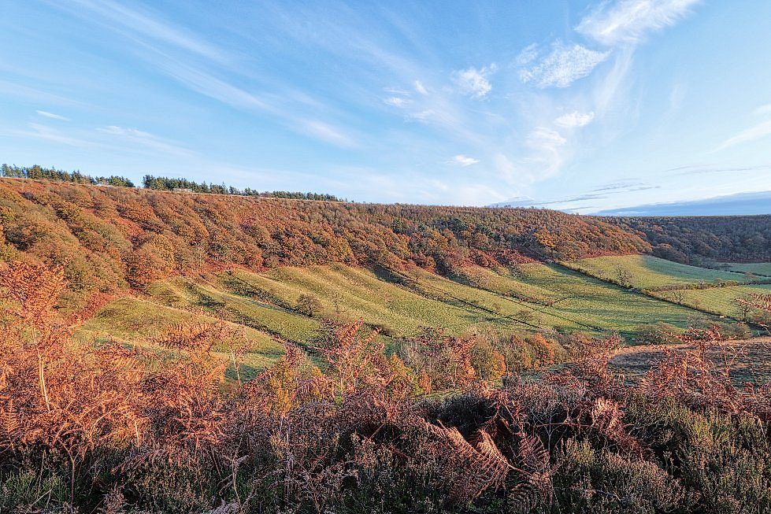
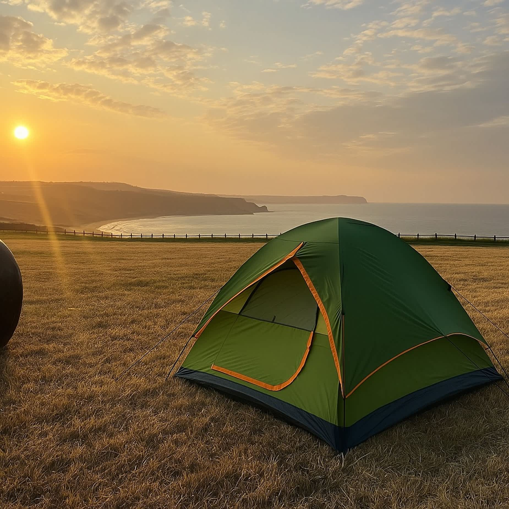
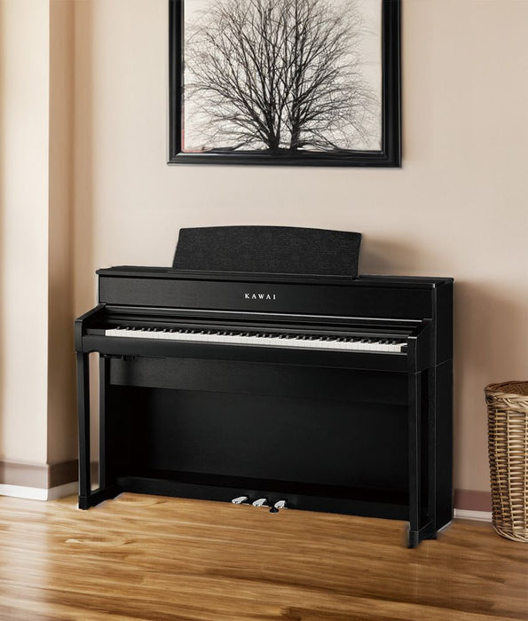

Yorkshire 海岸 · 露營觀星 · 海上日出 · Norwich 搬琴
2026年5月23-24日（週六-週日）
公路旅行 · Puffin · 露營觀星
King's Cross St Pancras，National 租車取 Peugeot Expert (5.8m³)。這台廂型車空間足夠裝下鋼琴和露營裝備。
從 King's Cross 往北約 20 分鐘車程。
沿 A1(M) / M1 北上，約 4 小時車程（213 英里）。建議中途在 Doncaster 或 Ferrybridge 服務站休息。
RSPB Bempton Cliffs 是英格蘭最大的海鳥棲息地，5月下旬正是觀賞 Puffin 的最佳時期。沿著 Cliff Top Trail（2英里）可以近距離觀察 Puffin、Gannet、Kittiwake 等約50萬隻海鳥。
如果體力和時間允許，可以開車 45 分鐘到 Hole of Horcum，這是一個壯觀的 400 英尺深天然山谷。短程環形步道約 2-2.5 小時（5英里）。

如果不想開遠，Flamborough Head 到 North Landing 的海岸步道只有 1.5-2 英里，輕鬆好走，風景壯麗，就在露營地旁邊。
Wold Farm 位於 Flamborough Head，面向北海（東面），可以直接從營地看到海景。晚上光害低，適合觀星；隔天清晨面東看日出。營地還有私人通道直達白堊懸崖，早上可以看 Puffin 和海豹。

日出 · 海豹 · York · Norwich · 搬鋼琴
日出方向約 55° 東北方，從營地或懸崖邊直接觀賞北海日出。五月底的日出非常早，光線柔和美麗。
清晨是觀賞海鳥和海豹的最佳時間。Flamborough Head 的懸崖上全年都可以看到灰海豹，而 Puffin 在早晨光線下特別上相。從營地的私人步道即可到達觀賞點。
收帳篷、整理裝備，準備出發。
從 Flamborough 開車約 45 分鐘到 York。快速逛一下 York Minster、The Shambles 和城牆，控制在 1.5 小時內。
York 到 Norwich 約 175 英里，車程約 3.5 小時。這是今天最長的一段路，建議中途休息一次。
Norfolk & Norwich Festival 2026（5/8-5/24），5月24日正好是最後一天！Norwich Jazz Festival 也同步進行中。
前往 22 Teal Drive, NR8 5FQ 取二手 Kawai CA701。鋼琴箱尺寸 159×70×65cm，重約 89.5kg，Peugeot Expert 的貨廂（286×163×140cm）完全放得下。

距離 Norwich 僅 32 分鐘車程（22英里）。即使在夏天，海灘上或海岸線旁也能看到海豹。有觀景台可以從沙丘上觀賞。如果時間充裕且鋼琴已上車，這是個很棒的加分行程。
回 Norwich 市區接朋友，準備回程。
Norwich 到倫敦約 115 英里，走 A11/M11 約 2.5 小時。預計晚上 8 點左右到達。
| 路段 | 距離 | 車程 | 停留 |
|---|---|---|---|
| King's Cross → Finchley | 7 mi | 20 min | 10 min |
| Finchley → Bempton Cliffs | 213 mi | 4h | 2.5h |
| Bempton → Hole of Horcum 選擇性 | 35 mi | 45 min | 2h |
| → Wold Farm 露營地 | 5–35 mi | 10–45 min | 過夜 |
| Wold Farm → York | 40 mi | 45 min | 1.5h |
| York → Norwich | 175 mi | 3.5h | 2h |
| Norwich → London | 115 mi | 2.5h | — |
| 總計 | ~580 mi | ~12h | ~8.5h |